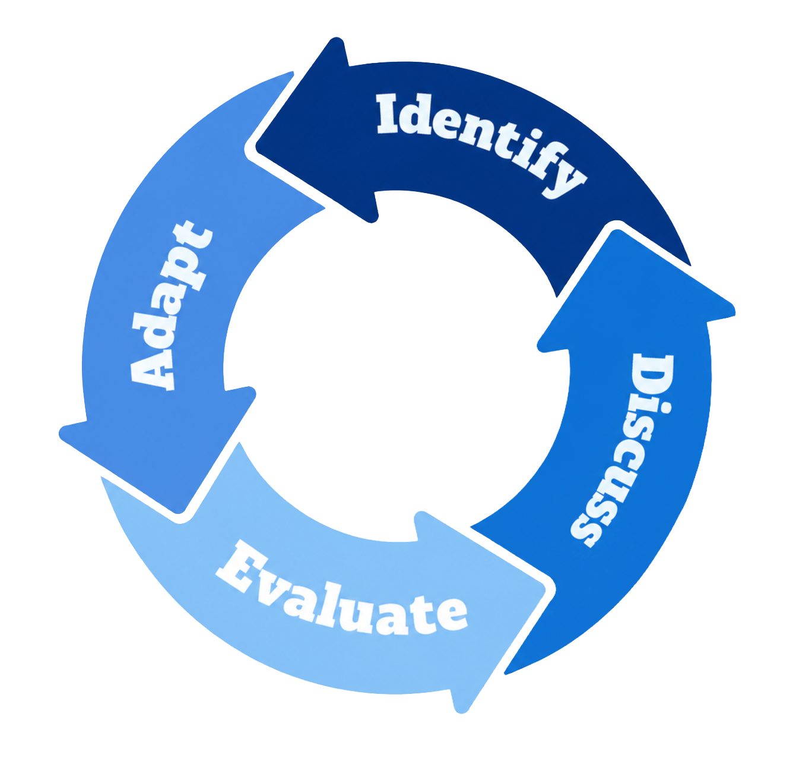
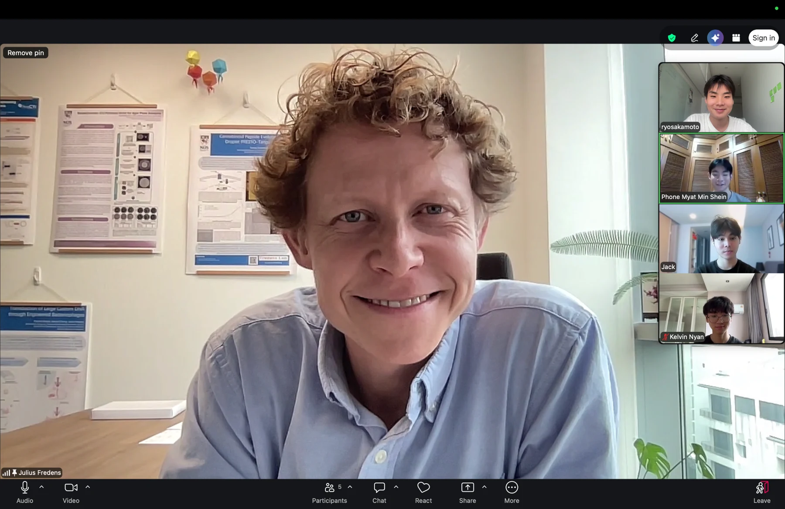
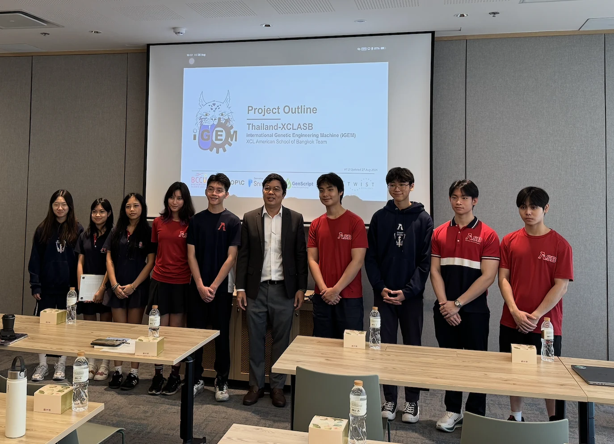
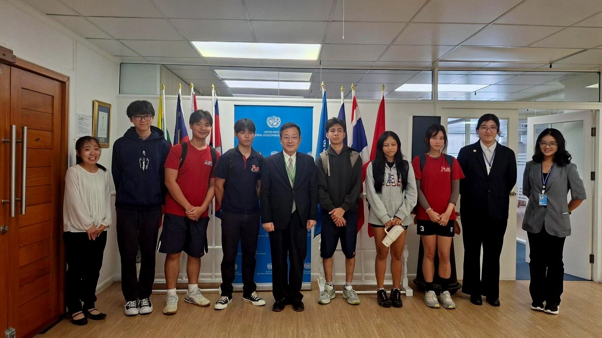
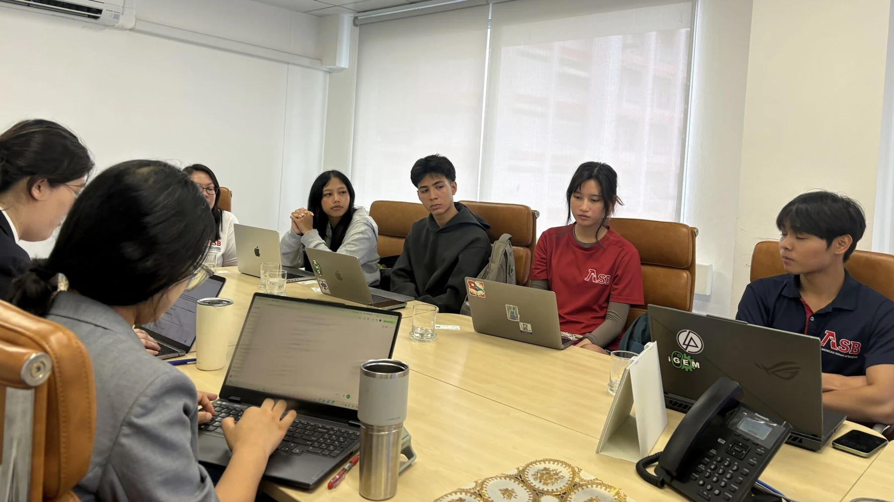
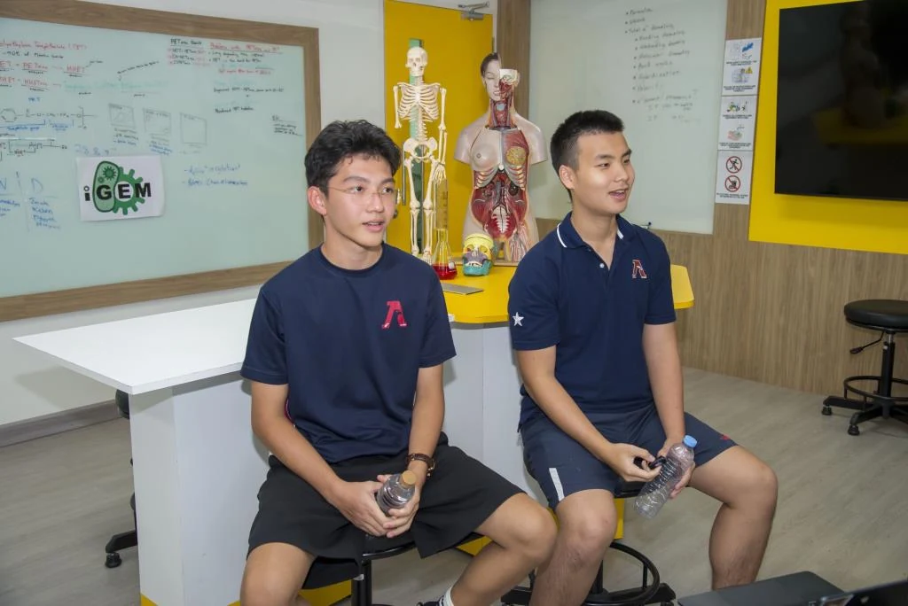

Cycle of Reflection
Our cycle of reflection forms the core of our human practices. By regularly assessing our goals, actions, and outcomes, we adapt our approach, making our work both responsible and responsive to the needs of stakeholders.

I.D.E.A. Framework
- Identify
Recognizing problems and gathering insights from key stakeholders and the public.
- Discuss
Engaging with stakeholders to exchange perspectives and explore potential solutions.
- Evaluate
Assessing feedback and practical constraints to determine how our project could improve.
- Adapt
Integrating insights into our research to refine our methods and strengthen our project impact.
Our human practices journey
The Human Practice journey for Melanify unfolded in a series of thoughtfully connected stages. We began by immersing ourselves in the underlying problem, seeking to truly understand the broader context and the challenges faced by those affected. As our understanding deepened, we turned our attention to the people who would use or be impacted by our work, taking care to listen to their perspectives and experiences. This focus on real users guided our next steps as we explored what would make our design both feasible and valuable in practice, iterating on potential solutions and testing assumptions along the way. Ultimately, these efforts set the groundwork for bringing Melanify closer to practical application, as we considered the pathways for introducing it to the market and explored opportunities to widen its positive impact. This approach made it possible to continually refine our project, ensuring that every decision was shaped by the needs and realities of the community we hope to serve.
-
01
Project consolidation
- Professor Meetings
- Expert Feedback
- Community Surveys
- Public Outreach
- Survey Results
- Project Refinement
-
02
Consulting stakeholders
- Industry Research
- Recycling Stakeholder Meetings
- Technical Feasibility Assessment
- Experimental Adaptation
-
03
Expanding impact
- UNIDO Consultation
- Regional Collaboration
- Global Scalability Assessment
- Cross-Regional Adaptation
-
04
National awareness
- Media Interview
- National Outreach
- Public Awareness
- Science Communication
STAGE 01Project consolidation
01Consolidating our project with expert opinion

View full sizeIdentify
The idea for our project took shape from a simple question: how could we make the biodegradation of plastic using HotPETase practically demonstrable and more sustainable in the real world? That question became the backbone of everything we did. We started shaping our research with this goal in mind, gradually fleshing out experimental plans and envisioning what a successful result might look like. When we felt the work had promise, we took the leap and pitched it to Chulalongkorn University. Instead of working in isolation, we actively reached out for input, knowing how much our project could benefit from diverse perspectives. One of the most memorable moments was meeting with Professor Julius from National University of Singapore, who listened thoughtfully and offered feedback that made us rethink parts of our approach. Later, we connected with Dr. Chanati, a Harvard alumnus now at Mahidol University, invited him to challenge our ideas.
Discuss
Both professors saw real potential in our project and affirmed its value in advancing the field, but they didn’t let us stop at what was already known. Instead, they challenged us to look beyond existing literature and seek out a more original angle. We remember Professor Julius pointing out that recycling plastic just to make more plastic wasn’t a truly sustainable solution, and he urged us to explore the possibilities of upcycling, finding higher-value uses for waste. Dr. Chanati echoed this sentiment, encouraging us to innovate within our current framework and reminding us that even established processes can be improved with fresh thinking. Their feedback made us reconsider the trajectory of our work, pushing us to set our sights higher and think more creatively about the impact our project could have.
Evaluate
Reflecting on the feedback we received, it became clear that our project, while innovative, was still part of the larger plastic problem. We recognized that not all plastic would ever be recycled and that, without a way to truly break the cycle, the buildup would persist. This realization pushed us to look for solutions that went beyond mere recycling, motivating us to explore biotechnologies that could create more lasting change. We also saw clear opportunities to improve the stability and accessibility of our process, especially in the context of bioreactors where enzymes do the heavy lifting. Ensuring those enzymes were accessible, and not trapped inside the cells, was crucial. In our E. coli system, the mating factor ensured enzyme accessibility was not an issue for some steps, but our MHETase enzyme, needed for converting PET into TPA, was locked inside the cell and near the lyse site. While extracting the enzyme in the lab was straightforward with a sonicator, scaling up in a reactor setting made cell lysis inefficient and costly. This challenge prompted us to search for alternative strategies that could streamline the process and improve cost-efficiency. Our efforts led to a deep dive into the scientific literature as we searched for better ways to engineer enzyme accessibility and stability on a larger scale.
Adapt
Taking their feedback to heart, we shifted our focus toward the upcycling of plastic, digging into examples of innovative products and projects. We were especially inspired by an iGEM team from 2022 that managed to derive vanillic acid from TPA, which opened our eyes to the broader possibilities of PET valorization. Considering Thailand’s environmental context, particularly high salinity and UV exposure, we identified catechol as a promising compound to synthesize from PET due to its oxidative properties. This new direction led us to completely revise our presentation and proposal, submitting an updated iGEM project to Chulalongkorn University that directly incorporated the professors’ advice. At the same time, we returned to our original PET-to-TPA pipeline and looked for ways to enhance it further. For the MHETase enzyme, rather than rely on post-translational modifications as before, we engineered a fusion with an ice-nucleation protein at the terminus to increase thermal stability and enable surface display. This adjustment eliminated the need to lyse E. coli cells to harvest the enzyme, streamlining the bioreactor process and making our approach potentially more efficient and cost-effective.
02Consolidating our project with public opinion
Identify
As our project developed, our team became increasingly focused on the idea of synthesizing melanin from PET waste for use in sunscreen, believing this could be particularly effective in Thailand’s climate. While we spent time considering compounds like gallic acid and even revisited the possibility of vanillic acid production, the practicality and local relevance of melanin continued to stand out. We felt a responsibility to confirm that this direction matched actual needs in our community, rather than relying only on our lab observations and assumptions.
To better understand local perspectives, we designed a community survey with the aim of discovering which problems people in Thailand regarded as most urgent. We carefully prepared a list of diverse issues, including some that we thought might be less commonly mentioned, and asked participants to rate what mattered most to them. Our central question was whether concerns about heat and UV radiation would emerge as priorities, given Thailand’s environmental conditions.
Obtaining school approval for the survey was important to us, especially since we wanted to be respectful of privacy and legal considerations in a high school environment. We decided against in-person interviews or any method that might require participants to reveal their identities. Instead, we created an anonymous Google Form, which allowed respondents to share their opinions freely and without concern for their privacy. This approach also minimized any risk of making anyone uncomfortable or inadvertently violating school policies.
Alongside gathering first-hand input, we took time to look at other ongoing research addressing similar community problems in Thailand. This background work helped us appreciate the complexity of local needs and ensured that our project would fit into the broader scientific and social landscape. By combining insights from the survey with our technical work, we hoped to create a solution that was both innovative and genuinely useful for people in our area.
STAGE 02Consulting stakeholders
03Listening to the people who move Thailand’s plastic

View full sizeIdentify
We identified that much of Thailand's recycling economy runs not through formal municipal systems but through an informal network of itinerant waste collectors — the saleng — who buy, sort, and sell recyclable plastic that would otherwise be burned or landfilled. Household participation in formal urban recycling programs is strikingly low: in Rayong Province, one study found only 2.8–3.2% of households took part, which helps explain why informal collectors carry so much of the load (Circulate Initiative, 2023). A UNESCAP case study of Bangkok's Sai Mai District describes salengs as itinerant buyers who collect and sort plastic from households and public bins and sell it on to small junkshop dealers, and credits this informal sector with keeping large volumes of plastic out of incinerators and landfills (UNESCAP, Sai Mai District Case Study). This mattered for our project because it reshaped where we thought our PET feedstock would actually come from. Only a small fraction of Thailand's plastic is recycled at all — national mapping estimates roughly 0.4 of 3.6 million tonnes per year, around 11% — and the portion that is recovered passes largely through these informal hands before it ever reaches a processor (Circulate Initiative, 2023). A sunscreen made from recovered PET therefore cannot be designed as a lab product alone: its supply depends on a low-margin, price-sensitive collector network whose livelihoods are already squeezed by fluctuating scrap prices and plastic imports (Dialogue Earth, 2023). Understanding that chain told us a genuinely useful solution had to fit the economy that already moves Thailand's plastic, not replace it.
Discuss
When we first started mapping out our project, we assumed that Thailand’s recycling infrastructure would provide a straightforward supply of PET for biotechnological conversion. Our research made it clear that most plastic recovery depends on informal collector networks rather than the kind of organized, municipal systems found elsewhere. Only a small percentage of PET was recovered for processing, while the rest is lost in a fragmented and price-sensitive supply chain. Recognizing this, we realized our project had to move beyond the confines of the lab and directly address the realities of Thailand’s recycling landscape.
To do this, we sought out Propella Ventures, who agreed to sponsor us and connect us with established players in the plastics industry. This partnership allowed us to organize a meeting with representatives from several major plastic recycling companies. We presented our full proposal, which aimed to take waste PET through enzymatic depolymerization to catechol.
They asked whether our process could cope with the mixed and contaminated PET that comes through recycling streams, since clean, lab-grade plastic is rarely available in real-world settings. We explained that our enzymatic process targets the PET polymer, but we also acknowledged that sorting and washing at earlier stages would remain necessary, making our approach dependent on the infrastructure already in place.
Another point of discussion was the practicality of scaling up. The experts questioned if a bioprocess involving microbial conversion could ever operate at the volumes required by industry. We were transparent about our current progress, admitting that we were still working at proof-of-concept scale and that the stability of our enzyme remained a significant obstacle to industrial application.
Economic considerations surfaced as well. The processors wanted to understand how our approach could create value for factories that must operate efficiently and keep costs low.
Safety and regulatory standards were also a major concern. The representatives emphasized that any new ingredient for sunscreen must meet strict requirements for both skin and reef safety.
The experience changed our project’s direction. The aim became to create a product with enough added value to justify extra processing steps. Meeting with industry experts gave us a set of practical constraints and objectives that have guided our work ever since. We decided to adapt our science toward realistic demands as by the innovations we pursue in the lab.
Evaluate
After receiving detailed feedback from industry stakeholders, we made it a priority to evaluate each suggestion and consider how it could be integrated into our project. We began by discussing these points with both our primary and secondary principal investigators, drawing on their experience to help us identify feasible routes for adaptation. Once we had mapped out possible changes, we brought our ideas to the bench and consulted directly with our supervisor, Dr. Kunlaya, to determine whether our current laboratory methodology could be adjusted to address the new concerns.
Adapt
We focused on the challenge of feedstock quality, which had emerged as a significant obstacle. Instead of continuing to use laboratory grade PET plastic, we decided to run our experiments using commercial, highly crystalline PET to better mimic the conditions of recycling streams. This shift represented a major methodological change and required us to rethink several experimental parameters. We also faced a logistical setback: shipment issues prevented us from obtaining the laboratory grade plastic we had originally planned to use as a control. As a result, our work moved forward using only the commercial PET, which, while not ideal for controlled comparison, provided valuable insight into how our process might perform outside the lab.
Background sources: The Circulate Initiative (2023); UNESCAP, Sai Mai District case study; Dialogue Earth (2023).
STAGE 03Expanding impact
04A platform with possibilities beyond sunscreen

View full sizeIdentify
We presented MELANIFY to the United Nations Industrial Development Organization (UNIDO), meeting with Fukuya IINO (Ph.D., MBA), Representative of UNIDO’s Sub-Regional Office for Thailand, Malaysia, Myanmar, Cambodia, Lao PDR, and Viet Nam. We identified an opportunity to explore how our PET-upcycling pathway could contribute to broader efforts in sustainable industrial development and alternative materials.
Discuss
UNIDO expressed interest in our ability to convert PET into terephthalic acid (TPA) and ultimately melanin, encouraging us to consider potential collaborations and applications beyond sunscreen. Their central question challenged our original vision: What if MELANIFY expanded beyond Thailand? They can testify that TPA holds significant value, as confirmed by staff working on bioplastics at the facility. TPA is sought after for research but also for various manufacturing applications. However, its primary use remains in producing more plastic, which brings us back to the original sustainability challenge. They have shown interest in our approach, but if our project is implemented outside Thailand, we must carefully consider how these dynamics may differ.
Evaluate
We reconsidered our project’s reliance on Thailand’s high UV exposure as its primary justification. While melanin-based sunscreen offered a locally relevant application, we recognized that other regions might have different priorities and that limiting our pathway to a single end product could overlook the wider potential of PET-derived compounds.
Adapt
We began envisioning MELANIFY as a flexible biotechnological platform rather than a solution tied to one product or country. By considering the possibility of stopping production at TPA or exploring alternative compounds, such as gallic acid for potential biomedical applications, we broadened our project’s scope toward region-specific needs. This consultation with UNIDO encouraged us to think beyond our original application and consider how our biological infrastructure could support diverse, higher-value products across borders, connecting a locally motivated project to broader global challe

View full sizeSTAGE 04National awareness
05Making our research accessible to a Thai audience

View full sizeIdentify
All of the discussions that molded our project by October included recycling stakeholders, international bodies, and professors, but they had all occurred in the context of expert circles. We saw a need: plastic pollution and UV exposure are issues that people in Thailand face every day, but the public is rarely informed about the research that is being done to find solutions. This is where MELANIFY comes in. Sunscreen made from plastic trash requires people to embrace an unknown source for a product they put on their skin, and it's not safe to presume that they will. Hence, public comprehension was crucial to the success of our initiative. It would have been easy to use English-language channels, but we would have reached the wrong individuals. Instead, we decided to communicate in Thai through outlets that Thai readers already trust.
Discuss
Several of Thailand's main news portals carried our article after it was covered by Bangkok Biznews on 12 October 2026. This included Matichon Online, MGR Online, and Bizmatching News. Our eleven-student team from XCL American School of Bangkok was featured in the article, which introduced us and detailed our research into how synthetic biology may transform PET waste into reef-safe sunscreen melanin and other valuable intermediate molecules. It linked the project directly to Thailand's Bio-Circular-Green economic model and framed upcycling as separate from traditional recycling. Both our principal PI at XCL ASB, Ms. Ronnie Nicole Wilson, and our laboratory supervisor, Prof. Dr. Kunlaya Somboonwiwat of Chulalongkorn University's Department of Biochemistry, made valuable contributions. We hoped to represent the school at the iGEM Grand Jamboree in Paris in November, and the stories also covered our presentation to UNIDO.
Questions from the interview
01 / Background and origin of the project
In October, The Nation Thailand interviewed our team about MELANIFY, helping us expand our project’s reach across Thailand and raise awareness of the issues we hope to address. The interview focused on plastic pollution in Thailand and the impact that certain sunscreen chemicals can have on coral reefs. It also gave us an opportunity to introduce MELANIFY, our project exploring how plastic waste can be upcycled into catechol-melanin for potential use in UV-protective sunscreen formulations. The information we shared is expected to be published nationwide through The Nation Thailand’s social media platforms, which reach millions of followers.
02 / Reason for selecting this project
Conventional plastic recycling often degrades polymer quality with each cycle, limiting how many times the material can be reused. MELANIFY explores an alternative by upcycling PET waste into catechol-melanin, a pigment with potential applications in UV protection and the development of alternative sunscreen formulations. This is particularly relevant in Thailand, where sunscreen regulations have tightened to protect marine ecosystems from harmful chemicals, highlighting the need to explore more environmentally compatible alternatives. Given Thailand’s persistent plastic pollution, particularly along waterways such as the Chao Phraya River, MELANIFY aims to connect waste management with a locally relevant application for protecting skin from UV radiation.
03 / Inspiration and motivation
So, as we did more research, we found out how big of a problem plastic is in Thailand. And that obviously made us much more motivated to improve the community around us. Another factor is definitely the team composition. So we’re a group of 11 students from the XCL American School of Bangkok, so that fact that we can really dive deep into a subject that we care and love so much, we never saw this project as another task or goal that we had to achieve but rather an opportunity to engage meaningfully with the things we love.
04 / Benefits: personal, community and commercial impact
Personal: Most of our team members are passionate about STEM, and working on MELANIFY has given us the opportunity to apply our knowledge beyond the classroom. We have gained experience in scientific research, collaboration, and problem-solving while learning to navigate the challenges of developing a biological solution.
Community: MELANIFY aims to address two environmental and public health challenges through one biological approach. By exploring how PET plastic can be converted into catechol-melanin, we hope to give plastic waste a new purpose while investigating a potential source of UV protection. In Thailand, where plastic pollution affects our waterways and strong UV exposure is a concern, this research could eventually contribute to developing sunscreen alternatives with a lower environmental impact.
Commercial Impact: Our conversations with professionals at the United Nations helped us broaden our understanding of MELANIFY’s potential beyond sunscreen. We learned that compounds produced during PET degradation, including terephthalic acid (TPA) and protocatechuic acid (PCA), could serve as starting materials for producing other valuable chemicals. This opened our eyes to the wider possibilities of plastic upcycling. As plastic production continues to grow, we hope our research can serve as a foundation for future innovators to explore commercially viable ways of converting plastic waste into useful products, creating new opportunities for biotechnology and a more circular economy.
Evaluate
Much of our framing relied on background information that the average reader would not have, as we discovered while getting ready for these interviews. When we removed the common language from our university meetings, the explanations that had worked became muddled, and the participants' responses did not correspond to the aspects of the project that we had been highlighting. We were more interested in finding the answer to the most basic question—why everyday bottles couldn't be transformed into anything more valuable than melted plastic—than in providing a detailed description of the enzymatic mechanism. Our numerous experimental failures and our will to overcome them were portrayed as key elements of the story instead of an embarrassment to be minimized, which is something we had been viewing as a weakness in the coverage. Similar to how the BCG economy model helped us frame our work for a Thai audience, it also placed MELANIFY inside a national policy framework, which gave the initiative relevance beyond its scientific novelty and made it more accessible. Given that MELANIFY has not been tested as a sunscreen, we had to carefully consider what we could honestly claim. Any statement on UV protection has to be presented as a direction for research rather than a proven characteristic.
Adapt
We now show MELANIFY differently because of the coverage. Instead of starting with the molecular pathway, we now lead with Thai context, the country's plastic burden, its UV intensity, and the BCG model. This is because the plastic-to-sunscreen framing conveys the full arc of the project in a single sentence without requiring any biochemistry. Our Engineering and Results websites now reflect our new approach to handling unsuccessful experiments: as an integral part of the effort, rather than something to be hidden. Also, instead of taking consumer acceptability as an assumed given, we made it an explicit project question; this will help guide our future regulatory and formulation consultation efforts. Our coverage served a purpose beyond that of our experiments; specifically, it aimed to educate a national audience—one that is unlikely to ever peruse an iGEM wiki—on the dangers of plastic pollution and the need for reef-safe sunscreen. We would aim for national media participation earlier in future projects to gain clarification that would have been helpful well before October, as reaching that audience is an outcome in and of itself.